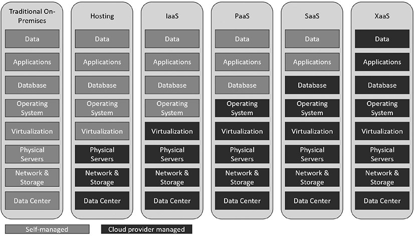

Table of Contents for
CompTIA Security+ All-in-One Exam Guide, Sixth Edition (Exam SY0-601)), 6th Edition
- Cover (01:09 mins)
- Title Page (01:09 mins)
- Copyright Page (03:27 mins)
- Dedication (01:09 mins)
- About the Authors (04:36 mins)
- Contents (19:33 mins)
- Preface (02:18 mins)
- Acknowledgments (01:09 mins)
- Introduction (12:39 mins)
-
Part I Threats, Attacks, and Vulnerabilities (01:09 mins)
- Chapter 1 Social Engineering Techniques (35:39 mins)
- Chapter 2 Type of Attack Indicators (37:57 mins)
- Chapter 3 Application Attack Indicators (33:21 mins)
- Chapter 4 Network Attack Indicators (39:06 mins)
- Chapter 5 Threat Actors, Vectors, and Intelligence Sources (44:51 mins)
- Chapter 6 Vulnerabilities (31:03 mins)
- Chapter 7 Security Assessments (23:00 mins)
- Chapter 8 Penetration Testing (25:18 mins)
-
Part II Architecture and Design (01:09 mins)
- Chapter 9 Enterprise Security Architecture (26:27 mins)
- Chapter 10 Virtualization and Cloud Security (25:18 mins)
- Chapter 11 Secure Application Development, Deployment, and Automation Concepts (27:36 mins)
- Chapter 12 Authentication and Authorization (33:21 mins)
- Chapter 13 Cybersecurity Resilience (39:06 mins)
- Chapter 14 Embedded and Specialized Systems (41:24 mins)
- Chapter 15 Physical Security Controls (49:27 mins)
- Chapter 16 Cryptographic Concepts (42:33 mins)
-
Part III Implementation (01:09 mins)
- Chapter 17 Secure Protocols (20:42 mins)
- Chapter 18 Host and Application Security (46:00 mins)
- Chapter 19 Secure Network Design (67:51 mins)
- Chapter 20 Wireless Security (25:18 mins)
- Chapter 21 Secure Mobile Solutions (43:42 mins)
- Chapter 22 Implementing Cloud Security (24:09 mins)
- Chapter 23 Identity and Account Management Controls (33:21 mins)
- Chapter 24 Implement Authentication and Authorization (37:57 mins)
- Chapter 25 Public Key Infrastructure (55:12 mins)
- Part IV Operations and Incident Response (01:09 mins)
- Part V Governance, Risk, and Compliance (01:09 mins)
- Part VI Appendixes and Glossary (01:09 mins)
- Glossary (65:33 mins)
- Index (67:51 mins)
CHAPTER 10
Virtualization and Cloud Security
In this chapter, you will
• Become familiar with cloud concepts
• Explore virtualization concepts
Virtualization and cloud services are becoming common enterprise tools to manage cost, capacity, complexity, and risk. You need to understand how these services contribute to a security solution in today’s enterprise, as described in this chapter.
Certification Objective This chapter covers CompTIA Security+ exam objective 2.2: Summarize virtualization and cloud computing concepts.
Cloud Models
There are many different cloud deployment models. Clouds can be created by many entities, both internal and external to an organization. Many commercial cloud services are available from a variety of firms, ranging from Google and Amazon to smaller, local providers. Internally, an organization’s own services can replicate the advantages of cloud computing while improving the utility of limited resources. The promise of cloud computing is improved utility and is marketed under the concepts of Platform as a Service (PaaS), Software as a Service (SaaS), and Infrastructure as a Service (IPaaS).
There are pros and cons to cloud-based computing. And for each use, the economic factors may differ (issues of cost, contracts, and so on). However, for someone standing up a test project for which they might not want to incur hardware costs associated with buying servers that may live beyond the test project, then “renting” space in the cloud makes sense. When multiple sites are involved and the issue of distributing data and backup solutions is a concern, cloud services offer advantages. However, with less control comes other costs, such as forensics, incident response, archiving data, long-term contracts, and network connectivity. For each case, a business analysis must be performed to determine the correct choice between cloud options and on-premises computing.
Infrastructure as a Service (IaaS)
Infrastructure as a Service (IaaS) is a marketing term used to describe cloud-based systems that are delivered as a virtual solution for computing. Rather than firms needing to build data centers, IaaS allows them to contract for utility computing as needed. IaaS is specifically marketed on a pay-per-use basis, scalable directly with need.
Platform as a Service (PaaS)
Platform as a Service (PaaS) is a marketing term used to describe the offering of a computing platform in the cloud. Multiple sets of software working together to provide services, such as database services, can be delivered via the cloud as a platform. PaaS offerings generally focus on security and scalability, both of which are characteristics that fit with cloud and platform needs.
Software as a Service (SaaS)
Software as a Service (SaaS) is the offering of software to end users from within the cloud. Rather than installing software on client machines, SaaS acts as software on demand, where the software runs from the cloud. This has a couple advantages: updates can be seamless to end users, and integration between components can be enhanced. Common examples of SaaS are products offered via the Web as subscription services, such as Microsoft Office 365 and Adobe Creative Suite.
Anything as a Service (XaaS)
With the growth of cloud services, applications, storage, and processing, the scale provided by cloud vendors has opened up new offerings that are collectively called Anything as a Service (XaaS). The wrapping of the previously mentioned SaaS and IaaS components into a particular service (say, Disaster Recovery as a Service) creates a new marketable item.

EXAM TIP Be sure you understand the differences between the cloud computing service models Platform as a Service, Software as a Service, Infrastructure as a Service, and Anything as a Service.
Level of Control in the Hosting Models
One way to examine the differences between the cloud models and on-premises computing is to look at who controls what aspect of the model. In Figure 10-1, you can see that the level of control over the systems goes from complete self-control in on-premises computing to complete vendor control in XaaS.

Figure 10-1 Comparison of the level of control in the various hosting models
Public
The term public cloud refers to a cloud service that is rendered over a system open for public use. In most cases, there is little operational difference between public and private cloud architectures, but the security ramifications can be substantial. Although public cloud services will separate users with security restrictions, the depth and level of these restrictions, by definition, will be significantly less in a public cloud.
Community
A community cloud system is one where several organizations with a common interest share a cloud environment for the specific purposes of the shared endeavor. For example, local public entities and key local firms may share a community cloud dedicated to serving the interests of community initiatives. This can be an attractive cost-sharing mechanism for specific data-sharing initiatives.
Private
If your organization is highly sensitive to sharing resources, you may wish to use a private cloud. Private clouds are essentially reserved resources used only by your organization—your own little cloud within the cloud. This setup will be considerably more expensive, but it should also carry less exposure and should enable your organization to better define the security, processing, and handling of data and so on that occurs within your cloud.
Hybrid
A hybrid cloud structure is one where elements from private, public, and community cloud structures are combined. When considering a hybrid structure, you need to remain cognizant that, operationally, these differing environments are not actually joined together but rather are used together. For example, sensitive information can be stored in a private cloud and issue-related information can be stored in the community cloud, yet all of this information is accessed by an application. This makes the overall system a hybrid cloud system.
EXAM TIP Be sure to understand and recognize the different cloud systems—private, public, hybrid, and community—because you may see all four as answer choices for a cloud question. The best answer will typically depend on a single factor or detail in the question.
Cloud Service Providers
Cloud service providers (CSPs) come in many sizes and shapes, with a myriad of different offerings, price points, and service levels. There are the mega-cloud providers, Amazon, Google, Microsoft, and Oracle, which have virtually no limit to the size they can scale to when needed. There are smaller firms, with some offering reselling from the larger clouds and others hosting their own data centers. Each of these has a business offering, and the challenge is determining which offering best fits the needs of your project or company. Many issues have to be resolved around which services are being provided and which are not, as well as price points and contractual terms. One important thing to remember: if something isn’t in the contract, it won’t be done. Take security items, for example: if you want the cloud provider to offer specific security functionality, it must be in the package you subscribe to; otherwise, you won’t receive this functionality.
Managed Service Provider (MSP) / Managed Security Service Provider (MSSP)
A managed service provider (MSP) is a company that remotely manages a customer’s IT infrastructure. A managed security service provider (MSSP) does the same thing as a third party that manages security services. For each of these services, the devil is in the details. The scope of the engagement, what is in the details of the contract, is what is being provided by the third party, and nothing else. For example, if you don’t have managing backups as part of the contract, either you do it yourself or you have to modify the contract. Managed services provide the strength of a large firm but at a fraction of the cost that a small firm would have to pay to achieve the scale advantages of a large firm. So, obviously, there are advantages. However, the downside is flexibility, as there is no room for change without renegotiating the contract for services.
On-Premises vs. Off-Premises
Systems can exist in a wide array of places—from on-premises, to hosted, to in the cloud. On-premises means the system resides locally in the building of the organization. Whether it’s a virtual machine (VM), storage, or even a service, if the solution is locally hosted and maintained, it is referred to as “on-premises.” The advantage is that the organization has total control of the system and generally has high connectivity to it. The disadvantage is that it requires local resources and is not necessarily easy to scale. Off-premises or hosted services refer to having the services hosted somewhere else, commonly in a shared environment. Using a third party for hosted services provides you a set cost based on the amount of those services you use. This has cost advantages, especially when scale is included—does it make sense to have all the local infrastructure, including personnel, for a small, informational-only website? Of course not; you would have that website hosted. Storage works the opposite with scale. Small-scale storage needs are easily met in-house, whereas large-scale storage needs are typically either hosted or in the cloud.
EXAM TIP On-premises means the system is on your site. Off-premises means it is somewhere else—a specific location. The phrase “in the cloud” refers to having the system distributed across a remotely accessible infrastructure via a network, with specific cloud characteristics, such as scalability and so on. This is true for both on- and off-premises.
Fog Computing
Cloud computing has been described by pundits as using someone else’s computer. If this is the case, then fog computing is using someone else’s computers. Fog computing is a distributed form of cloud computing, in which the workload is performed on a distributed, decentralized architecture. Originally developed by Cisco, fog computing moves some of the work into the local space to manage latency issues, with the cloud being less synchronous. In this form, it is similar to edge computing, which is described in the next section.
Fog computing is an architecture where devices mediate processing between local hardware and remote servers. It regulates which information is sent to the cloud and which is processed locally, with the results sent to the user immediately and to the cloud with its latency. One can view fog computing as using intelligent gateways that handle immediate needs while managing the cloud’s more efficient data storage and processing. This makes fog computing an adjunct to cloud, not a replacement.
Edge Computing
Edge computing refers to computing performed at the edge of a network. Edge computing has been driven by network vendors who have processing power on the network and wish new markets rather than just relying on existing markets. Edge computing is similar to fog computing in that it is an adjunct to existing computing architectures—one that is designed for speed. The true growth in edge computing has occurred with the Internet of Things (IoT) revolution. This is because edge computing relies on what one defines as “the edge,” coupled with the level of processing needed. In many environments, the actual edge is not as large as one might think, and what some would call edge computing is better accomplished using fog computing. But when you look at a system such as IoT, where virtually every device may be an edge, then the issue of where to do computing comes into play—on the tiny IoT device with limited resources or at the nearest device with computing power. This has led networking companies to create devices that can manage the data flow and do the computing on the way.
EXAM TIP Remember that edge computing brings processing closer to the edge of the network, which optimizes web applications and IoT devices.
Thin Client
A thin client is a lightweight computer, with limited resources, whose primary purpose is to communicate with another machine. Thin clients can be very economical when they are used to connect to more powerful systems. Rather than having 32 GB of memory, a top-level processor, a high-end graphics card, and a large storage device on every desktop, where most of the power goes unused, the thin client allows access to a server where the appropriate resources are available and can be shared. With cloud computing and virtualization, where processing, storage, and even the apps themselves exist on servers in the cloud, what is needed is a device that connects to that power and acts as an input/output device.
Containers
Virtualization enables multiple OS instances to coexist on a single hardware platform. The concept of containers is similar, but rather than having multiple independent OSs, a container holds the portions of an OS that it needs separate from the kernel. Therefore, multiple containers can share an OS, yet have separate memory, CPU, and storage threads, guaranteeing that they will not interact with other containers. This allows multiple instances of an application or different applications to share a host OS with virtually no overhead. This also allows portability of the application to a degree separate from the OS stack. Multiple major container platforms exist, such as Docker. Rather than adopt a specific industry solution, the industry has coalesced around a standard form called the Open Container Initiative (OCI), designed to enable standardization and the market stability of the environment. Different vendors in the container space have slightly different terminologies, so you need to check with your specific implementation by vendor to understand the exact definition of container and cell in their environment.
You can think of containers as the evolution of the VM concept to the application space. A container consists of an entire runtime environment bundled into one package: an application, including all its dependencies, libraries, and other binaries, and the configuration files needed to run it. This eliminates the differences between development, test, and production environments, as the differences are in the container as a standard solution. By containerizing the application platform, including its dependencies, any differences in OS distributions, libraries, and underlying infrastructure are abstracted away and rendered moot.
EXAM TIP Containers are a form of operating system virtualization. They are a packaged-up combination of code and dependencies that help applications run quickly in different computing environments.
Microservices/API
An application programming interface (API) is a means for specifying how one interacts with a piece of software. Let’s use a web service as an example: if it uses the representational state transfer (REST) API, then the defined interface is a set of four actions expressed in HTTP:
• GET Get a single item or a collection.
• POST Add an item to a collection.
• PUT Edit an item that already exists in a collection.
• DELETE Delete an item in a collection.
Microservices is a different architectural style. Rather than defining the inputs and outputs, microservices divide a system into a series of small modules that can be coupled together to produce a complete system. Each of the modules in a microservices architecture is designed to be lightweight, with simple interfaces and structurally complete. This allows for more rapid development and maintenance of code.
Infrastructure as Code
Infrastructure as code is the use of machine-readable definition files as well as code to manage and provision computer systems. By making the process of management programmable, there are significant scalability and flexibility advantages. Rather than having to manage physical hardware configurations using interactive configuration tools, infrastructure as code allows for this to be done programmatically. A good example of this is in the design of software-defined networking.
Software-Defined Networking (SDN)
Software-defined networking (SDN) is a network architecture where the control plane and the data plane are separated. This allows for networking hardware to be under programmatic control, even while processing data. Traditional network architectures have the data plane and the control plane coexisting, and one of the results is the reduced flexibility of changing the network. This comes as a result of the scope of communications with respect to data. Where a data stream doesn’t go has only limited programmability options. With SDN, a complete network programming stack exists, separate from data flows and programmable across the entire network. This provides significant flexibility and programmability in SDN networks, although at the cost of complexity. A key element of SDN is network function virtualization (NFV). NFV is an architecture that virtualizes network services, such as routers, firewalls, and load balancers, as opposed to running them on dedicated, specific hardware. Together, SDN and NFV create a fully functional network under the infrastructure as code architectural model.
Software-Defined Visibility (SDV)
For a network device to operate on data, it must see the data flow. Firewalls can’t manage data they don’t see, so firewalls are physically positioned throughout the network in line with the system’s physical architecture. Just as software-defined networking has changed how networks are managed, software-defined visibility (SDV) is an extension of this infrastructure as code idea for the network visibility problem. Rather than the next-generation firewall (NGFW) being positioned strategically in line with data flows physically, it is done via code through the SDN fabric. This allows flexibility in design and the ability to reconfigure networks on the fly, including the security components.
Serverless Architecture
When an infrastructure is established “on premises,” the unit of computing power is a server. To set up e-mail, you set up a server. To set up a website, you set up a server. The same issues exist for storage: Need storage? Buy disks. Yes, these disks can all be shared, but in the end, computing is servers, storage is disks. With the cloud, this all changes. The cloud is like the ultimate shared resource, and with many large providers, you don’t specify servers or disks, you specify capacity. The provider then spins up the required resources. This serverless architecture simplifies a lot of things and adds significant capabilities. By specifying the resources needed in terms of processing power, the cloud provider can spin up the necessary resources. Because you are in essence renting from a large pool of resources, this gives you the ability to have surge capacity, where for a period of time you increase capacity for some specific upturn in usage. One of the operational advantages of this is that cloud providers can make these changes via automated scripts that can occur almost instantaneously, as opposed to the on-premises problem of procurement and configuration. This architecture also supports service integration, thus expanding the utility of computing to the business.
EXAM TIP Know that serverless architecture is a way to develop and run applications and services without owning and managing an infrastructure. Servers are still used, but they are owned and managed “off-premises.”
Services Integration
Services integration is the connection of infrastructure and software elements to provide specific services to a business entity. Connecting processing, storage, databases, web, communications, and other functions into an integrated comprehensive solution is the goal of most IT organizations. Cloud-based infrastructure is the ideal environment to achieve this goal. Through predesigned scripts, the cloud provider can manage services integration in a much more scalable fashion than individual businesses. For a business, each integration is a one-off creation, whereas the cloud services provider can capitalize on the reproducibility of doing the same integrations for many customers. And with this scale and experience comes cost savings and reliability.
Resource Policies
When you are specifying the details of a cloud engagement, how much processing power, what apps, what security requirements, how much storage, and access control are all resources. Management of these items is done via resource policies. Each cloud service provider has a different manner of allowing you to interact with their menu of services, but in the end, you are specifying the resource policies you wish applied to your account. Through resource policies you can define what, where, or how resources are provisioned. This allows your organization to set restrictions, manage the resources, and manage cloud costs.
Transit Gateway
A transit gateway is a network connection that is used to interconnect virtual private clouds (VPCs) and on-premises networks. Using transit gateways, organizations can define and control communication between resources on the cloud provider’s network and their own infrastructure. Transit gateways are unique to each provider and are commonly implemented to support the administration of the provider’s cloud environment.
Virtualization
Virtualization technology is used to enable a computer to have more than one OS present and, in many cases, operating at the same time. Virtualization is an abstraction of the OS layer, creating the ability to host multiple OSs on a single piece of hardware. To enable virtualization, a hypervisor is employed. A hypervisor is a low-level program that allows multiple operating systems to run concurrently on a single host computer. Hypervisors use a thin layer of code to allocate resources in real time. The hypervisor acts as the traffic cop that controls I/O and memory management. One of the major advantages of virtualization is the separation of the software and the hardware, creating a barrier that can improve many system functions, including security. The underlying hardware is referred to as the host machine, and on it is a host OS. Either the host OS has built-in hypervisor capability or an application is needed to provide the hypervisor function to manage the virtual machines (VMs). The virtual machines are typically referred to as guest OSs. Two types of hypervisors exist: Type I and Type II.
EXAM TIP A hypervisor is the interface between a virtual machine and the host machine hardware. Hypervisors comprise the layer that enables virtualization.
Type I
Type I hypervisors run directly on the system hardware. They are referred to as a native, bare-metal, or embedded hypervisors in typical vendor literature. Type I hypervisors are designed for speed and efficiency, as they do not have to operate through another OS layer. Examples of Type I hypervisors include KVM (Kernel-based Virtual Machine, a Linux implementation), Xen (Citrix Linux implementation), Microsoft Windows Server Hyper-V (a headless version of the Windows OS core), and VMware’s vSphere/ESXi platforms. All of these Type I hypervisors are designed for the high-end server market in enterprises and are designed to allow multiple VMs on a single set of server hardware. These platforms come with management tool sets to facilitate VM management in the enterprise.
Type II
Type II hypervisors run on top of a host operating system. In the beginning of the virtualization movement, Type II hypervisors were most popular. Administrators could buy the VM software and install it on a server they already had running. Typical Type II hypervisors include Oracle’s VirtualBox and VMware’s VMware Player. These are designed for limited numbers of VMs, typically running in a desktop or small server environment.
Virtual Machine (VM) Sprawl Avoidance
Sprawl is the uncontrolled spreading and disorganization caused by lack of an organizational structure when many similar elements require management. Just as you can lose track of a file in a large file directory and have to hunt for it, you can lose track of a VM among many others that have been created. VMs basically are files that contain a copy of a working machine’s disk and memory structures. Creating a new VM is a simple process. If an organization has only a couple of VMs, keeping track of them is relatively easy. But as the number of VMs grows rapidly over time, sprawl can set in. VM sprawl is a symptom of a disorganized structure. An organization needs to implement VM sprawl avoidance through policy. It can avoid VM sprawl through naming conventions and proper storage architectures so that the files are in the correct directory/folder, making finding the correct VM easy and efficient. But as in any filing system, it works only if everyone routinely follows the established policies and procedures to ensure that proper VM naming and filing are performed.
One of the strongest business cases for an integrated VM management tool such as ESXi Server from VMware is its ability to enable administrators to manage VMs and avoid sprawl. Being able to locate and use resources when required is an element of security, specifically availability, and sprawl causes availability issues.
VM Escape Protection
When multiple VMs are operating on a single hardware platform, one concern is VM escape, where software, either malware or an attacker, escapes from one VM to the underlying OS. Once the VM escape occurs, the attacker can attack the underlying OS or resurface in a different VM. When you examine the problem from a logical point of view, both VMs use the same RAM, the same processors, and so forth; the difference is one of timing and specific combinations. While the VM system is designed to provide protection, as with all things of larger scale, the devil is in the details. Large-scale VM environments have specific modules designed to detect escape and provide VM escape protection to other modules.
EXAM TIP Virtual environments have several specific concepts that the exam may address. Understand the differences between VM sprawl and VM escape and the issues each poses. Expect questions for which you are given several of these terms as options and have to choose the correct one.
Chapter Review
In this chapter, you became acquainted with virtualization and cloud services. The chapter opened with a description of the different cloud models, including Infrastructure as a Service, Platform as a Service, Software as a Service, and Anything as a Service. The models of private, public, hybrid, and community clouds were also explored. Next, the topics of cloud service providers, managed service providers, and managed security service providers were covered, followed by issues associated with on-premises, hosted, and cloud-based provisioning.
Next, the architectural elements of fog, edge, and thin client computing were covered, and containers and API/microservices were explored. Managing cloud resources via infrastructure as code, serverless architectures, services integration, resource policies, and transit gateways was covered. The chapter concluded with an examination of virtualization, hypervisors, both Types I and II, and the problems with VM sprawl and VM escape.
Questions
To help you prepare further for the CompTIA Security+ exam, and to test your level of preparedness, answer the following questions and then check your answers against the list of correct answers at the end of the chapter.
1. How does a hypervisor enable multiple guest operating systems to run concurrently on a host computer?
A. Via a specialized driver package
B. By abstracting the hardware from the guest operating system
C. By providing specific virtual hardware to each guest OS
D. By hiding the underlying Linux operating system
2. You have deployed a network of Internet-connected sensors across a wide geographic area. These sensors are small, low-power IoT devices, and you need to perform temperature conversions and collect the data into a database. The calculations would be best managed by which architecture?
A. Fog computing
B. Edge computing
C. Thin client
D. Decentralized database in the cloud
3. Your new application has multiple small processes that provide services to the network. You want to make this application run more efficiently by virtualizing it. What is the best approach for virtualization of this application?
A. Type II hypervisor
B. Linux KVM
C. Containerization
D. Type I hypervisor
4. Why is VM sprawl an issue?
A. VM sprawl uses too many resources on parallel functions.
B. The more virtual machines in use, the harder it is to migrate a VM to a live server.
C. Virtual machines are so easy to create, you end up with hundreds of small servers only performing a single function.
D. When servers are no longer physical, it can be difficult to locate a specific machine.
5. When doing incident response for your company, you review the forensics of several virtual servers and you see the attacker on the web server injecting code into uninitialized memory blocks. What attack is the attacker likely attempting?
A. Denial-of-service attack on the hypervisor
B. VM escape
C. Containerization attack
D. Crashing the CASB
6. You are planning to move some applications to the cloud, including your organization’s accounting application, which is highly customized and does not scale well. Which cloud deployment model is best for this application?
A. SaaS
B. PaaS
C. IaaS
D. None of the above
7. You need to move to the cloud a specific customer service module that has a web front end. This application is highly scalable and can be provided on demand. Which cloud deployment model is best for this application?
A. SaaS
B. PaaS
C. IaaS
D. None of the above
8. One of the primary resources in use at your organization is a standard database that many applications tie into. Which cloud deployment model is best for this kind of application?
A. SaaS
B. PaaS
C. IaaS
D. None of the above
9. Which cloud deployment model has the fewest security controls?
A. Private
B. Public
C. Hybrid
D. Community
10. What is the primary downside of a private cloud model?
A. Restrictive access rules
B. Cost
C. Scalability
D. Lack of vendor support
Answers
1. B. The hypervisor abstracts the hardware from the guest operating system to enable multiple guest operating systems to run concurrently on a host computer.
2. B. Edge computing on the way to the cloud would be the best fit given the lightweight processing capability of the IoT devices.
3. C. Containerization runs small applications on a host OS with virtually no overhead.
4. D. VM sprawl is an issue because when virtual machines proliferate, they can be easily moved and potentially easily copied to random locations. This can make finding a specific machine difficult without a carefully constructed and consistently managed organizational structure.
5. B. Although all hypervisors actively try to prevent it, any flaw in memory handling could allow code that is maliciously placed in a block to be read by the hypervisor or another machine. This is known as VM escape. The scenario states virtual server, eliminating answers C and D, and operational code blocks in uninitialized memory would not cause a denial of service, eliminating answer A.
6. C. Infrastructure as a Service is appropriate for highly customized, poorly scaling solutions that require specific resources to run.
7. A. Software as a Service is suitable for delivering highly scalable, on-demand applications without installing endpoint software.
8. B. Platform as a Service is suitable for standard resources in use by many other applications.
9. B. The shared environment of a public cloud has the least amount of security controls.
10. B. A private cloud model is considerably more expensive, as it is a dedicated resource, negating some of the advantages of outsourcing the infrastructure in the first place.